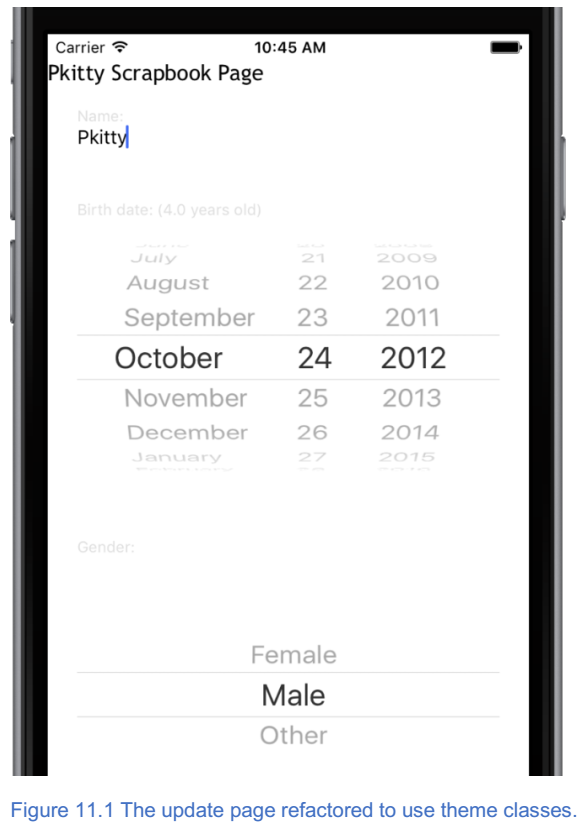
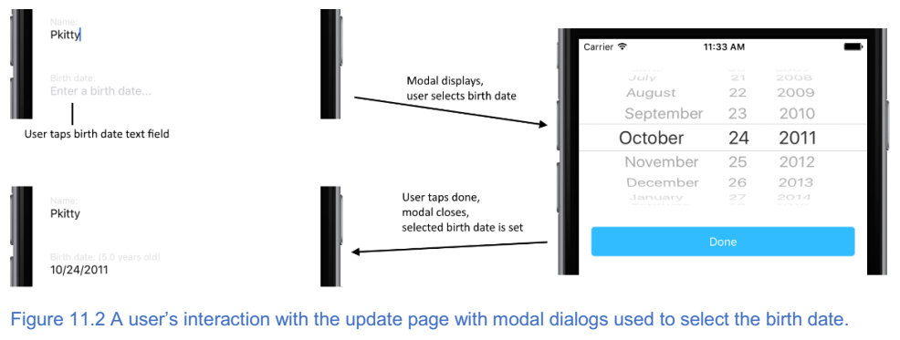
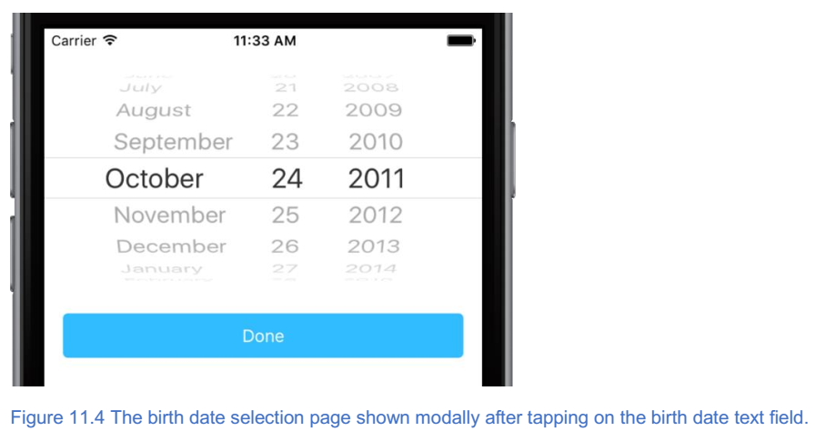
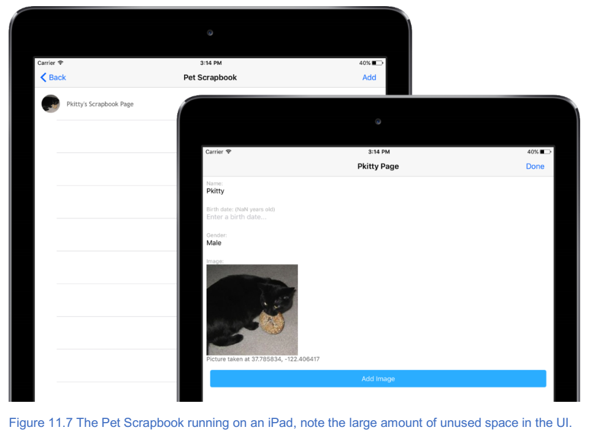
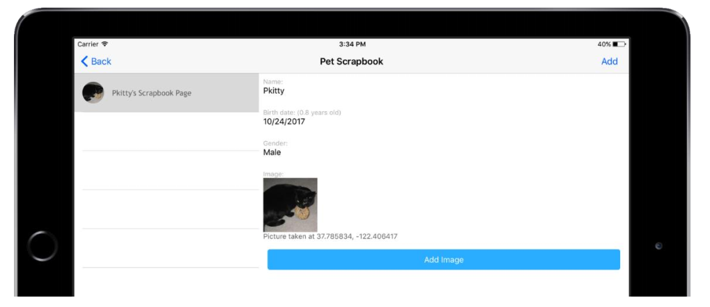
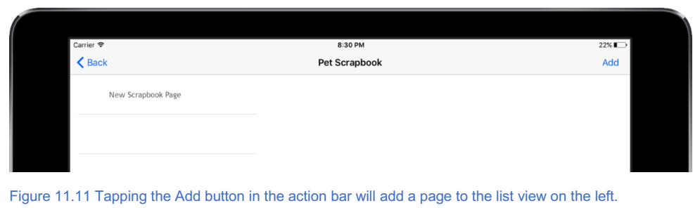
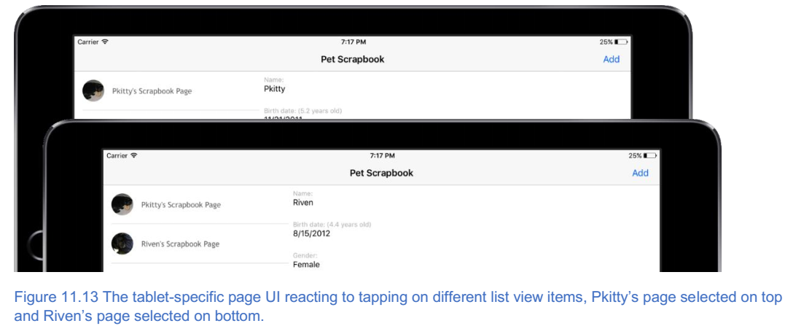

12. 细化用户体验¶
本章涵盖
- 通过移动日期和列表选取器到模态对话框来改善用户体验；
- 适应多个屏幕分辨率；
在最后一章中，您学习了 NativeScript 主题如何花费最少的精力使您的应用程序看起来更加专业。以宠物剪贴簿为例，我们使用内置的浅色配色方案设计了主页，剪贴簿列表和更新页面。尽管应用程序开始看起来更专业，但更新页面的 UI 和功能却很笨拙。
在本章中，您将学习如何通过使用模态对话框来创建更干净，更简洁的用户界面。我们还将解决多种屏幕尺寸的问题，并且当我们完成后，我们将为手机和平板电脑开发一款外观精美的应用。 我们走吧！
12.1. 用模态构建专业用户界面¶
在第10章中，您学习了如何使用内置主题类替换自定义 CSS 样式。我们离开时更新页面部分完成（图11.1）。
我们认为更新页面不完整，因为出生日期选择器和性别列表选取器占用太多空间，造成混乱的外观。在移动应用中，外观很重要，所以我们将通过使用模态对话框来构建更专业的用户界面。
注解
模态对话框是 UI 设计概念，用户在页面上的交互提示 UI 临时在第一页顶部显示第二页。当用户完成与第二页的交互时，它将消失并且 UI 被重定向到第一页。此 UI 交互模式（以及显示的第二个页面）称为模式对话框，因为第二个页面通常包含一个对话框或其他 UI 元素，该元素太大而无法放在第一页上。
模态对话框（也称为模态页面或简单模式）是隐藏页面上复杂的 UI 交互的好方法，只有在需要时才显示。出于这个原因，我们将使用模态来替换更新页面上的出生日期选择器和性别列表选择器 UI 元素。
这些更改的目标是创建一个不太复杂的 UI ，可以适应屏幕而无需滚动。为了支持使用模态，用户的工作流程和页面导航将会改变。用户不必直接在更新页面上使用日期选择器和列表选择器，而是点击文本字段输入出生日期和性别。点击文本字段后，将出现一个模式对话框，其中包含出生日期选择器和性别列表选择器。当他们选择了所需的值时，模式对话框关闭，所选值显示在更新页面上。 图11.2显示了出生日期选择器的此工作流程的预览。
当我们重构并为出生日期选择器和性别列表选择器构建新的模式时，我们将引用此工作流程。 让我们开始吧！
12.1.1. 将日期选择器移动到模态页面¶
在我们深入研究代码和 UI 重构之前，让我们花点时间概述我们的重构方法。
小技巧
当你要进行大型重构时，最好概述你要采取的步骤。这将有助于收集您的想法并记录您的计划。 长期来看，如果您需要长时间离开，您的计划将对您有所帮助，并且在与他人合作时提供协调/协作点。此外，如果您的计划中途发生变化，请不要感到难过 - 只需更新您的计划并继续前进。
我们的重构计划有八个步骤。哇！八个步骤！ 是的，我们知道 - 这是很多。如果你感到不知所措，或者如果你不确定你是否可以自己想出这些步骤，那就没关系。我们要经历每一步，详细解释它。
- 将出生日期选择器元素移动到新页面。
- 使用文本字段替换出生日期选择器，并阻止用户编辑文本 - 我们的底层页面代码将通过数据绑定设置字段值（步骤7）。
- 使用 birthDate 属性替换可观察剪贴簿的月，日和年属性。
- 添加一个点击事件和事件处理程序到文本字段，点击时导航到出生日期选择器模态页面。传入关闭回调函数时，模式页面将在关闭时调用以将数据传回到更新页面。
- 在出生日期选择器模式页面上，处理 shownModally 事件，保存对关闭回调函数的引用。
- 数据绑定模态页面上的出生日期选择器。
- 向完成按钮添加一个点击事件和事件处理程序，在点击时调用模态的关闭回调。这会将选定的出生日期传回更新页面。
- 在更新页面上处理关闭回调方法，通过更新其数据绑定字段来更新出生日期文本字段的值。
现在我们有了我们的计划，让我们开始将日期选择器移动到新页面。
12.1.1.1. 第1步：将日期选择器移至新页面¶
首先在 app/views 文件夹中创建两个新文件： selectDate-page.xml 和 selectDate-page.js 。 但是等一下！我们正在创建一个模态页面？是的。模态只是简单的页面，您可以像创建其他页面一样创建它们。因为它们是页面，所以适用于 XML ， JavaScript 和 CSS 文件的文件命名约定。
警告
我们说模态就像页面，但技术上在模态和页面之间有一些细微的差别。虽然您定义了类似于定义页面的模态，但是模态会在加载时引发新事件，并且离开模态的导航工作方式也不同。我们会在我们后面的时候回顾这些差异，但现在，您可以像对待页面一样对待它们。
让我们继续添加页面元素，堆栈布局，日期选择器和按钮到新页面的 UI ，如清单11.1所示。
代码清单11.1 selectDate-page.xml 文件
<Page shownModally="onShownModally" loaded="onLoaded">//我们将处理showModally和loaded事件
<StackLayout>
<DatePicker date="{{ date }}"/> //我们可以直接绑定到日期属性，而不是绑定到年，月和日属性
<Button class="btn btn-primary btn-rounded-sm btn-active" text="Done" tap="onDoneTap"/>
</StackLayout>
</Page>
您会注意到我们在此页面上介绍的一些新功能。第一个是 shownModally 事件。
注解
当页面显示为模式对话框时，会显示 shownModally 事件。这就像一个页面的 onLoaded 事件，但是只要在移动设备上显示模式，就会立即引起该事件。
除了 shownModally 事件外，我们还更改了日期选择器上的数据绑定属性。在更新页面上，我们使用了年，月和日属性：
<DatePicker year="{{ year }}" month="{{ month }}" day="{{ day }}" />
数据绑定到这三个属性是没有必要的，同样的事情可以通过直接绑定到日期选择器的 date 属性来完成：
<DatePicker date="{{ date }}" />
这就是日期选择器模态页面的 UI 。我们将回到 JavaScript 来在后续步骤中连接我们的事件和数据绑定。
12.1.1.2. 第2步：用文本字段替换日期选择器¶
现在我们已经用日期选择器创建了一个模态页面，我们可以从更新页面中删除日期选择器。删除它，然后将其替换为文本字段。当你在那里时，更新标签的数据绑定表达式以使用生日而不是月，日和年（列出11.2）。
列表11.2 用 scrapbookUpdate-page.xml 替换出生日期数据选择器的文本字段
<Label text="{{ (birthDate), 'Birth date: ' +
(birthDate === null ?
'' :
'(' + calcAge(birthDate) + ' years old)' ) }}"
class="label" />
<TextField class="input" editable="false"
text="{{ birthDate, birthDate | dateConverter(dateFormat) }}" //dateConverter是一个类型转换器数据绑定表达式，用于将出生日期从日期转换为字符串
tap="onBirthDateTap" hint="Enter a birth date..." />
表面上，我们添加了一个典型的文本字段，但是引入了一些新的概念 - 是 editable 属性。
注解
设置为 false 时，文本字段的可编辑属性可防止用户点击文本字段并更改值。这与禁用文本字段类似，但禁用会在文本字段中将文本颜色更改为灰显。当 editable 属性设置为 false 时，用户不能编辑内容，并且内容不会显示为灰色。
我们还引入了一种新的数据绑定表达式： {{birthDate，birthDate | dateConverter（dateFormat）}} 。 这种类型的数据绑定表达式包含一个称为转换器的东西。
注解
转换器在双向数据绑定期间解决了一个非常具体的问题：两种数据类型之间的转换。更具体地说，数据绑定观察值内的数据可以作为复杂对象（例如，日期）存储，但日期值可以绑定到文本字段显示为字符串。转换器提供了一种在这两个对象之间进行转换的方法。
看看我们的例子，我们的数据绑定可观察的 birthDate 属性是一个 date ，文本字段的 text 属性显示一个字符串。 NativeScript 数据绑定本身并不知道如何在两个不同的对象之间进行转换。它会猜，但通常是错的。想一想：有几种方法可以显示日期：美国格式( MM/DD/YYYY 或 MM/DD/YY )，ISO格式( YYYY-MM-DD )等。要解决此问题，请创建一个转换器函数，该函数明确描述如何转换值。
注解
国际化（i18n）和NativeScript
您不应该假设您的应用将在单一国家使用并支持单一语言。事实上，您的应用可能会在全世界范围内使用。
开发应用程序以便轻松调整以支持多种语言和文化的过程称为国际化（i18n）。
尽管本书不打算重点关注 i18n ，但有一个名为 nativescript-i18n 的 npm 插件实现了 i18n 。通过使用此插件，您可以构建您的应用程序，以支持多种语言和文化。如果您的应用需要支持 i18n ，或者您想构建一个可供多种语言和文化访问的应用，请查看此插件，网址为 https://www.npmjs.com/package/nativescript-i18n 。
你可以使用 {{birthDate，birthDate | dateConverter(dateFormat)}} ，数据绑定表达式使用 | 转换器符号。垂直条之后的功能是转换器功能。
既然您知道转换器功能是什么，那么您需要知道如何定义转换器功能。它们像普通函数一样定义，但需要在 app.js 文件中全局注册。我们来看看我们的 app.js 文件中的函数定义（清单11.3）。
清单11.3 用于将日期转换为 MM/DD/YYYY 格式的转换器函数，在 app.js 文件中定义
var application = require("application");
application.cssFile = "./app.css";
var dateConverter = function(value, format) { //转换器函数包含两个参数：要转换的值和转换期间要使用的格式（或选项）
if (value === null || value === undefined || value === '') return '';
var parsedDate = new Date(value);
var result = format;
var day = parsedDate.getDate();
result = result.replace("DD", day);
var month = parsedDate.getMonth() + 1;
result = result.replace("MM", month);
result = result.replace("YYYY", parsedDate.getFullYear());
return result;
};
var resources = application.getResources(); //应用程序资源是全局对象集合
resources.dateConverter = dateConverter; //转换器功能应该在资源集合中全局注册
resources.dateFormat = "MM/DD/YYYY"; //还注册全局使用的格式字符串，以便我们可以在整个应用程序中共享它
application.start({
moduleName: "views/home-page"
});
转换函数被定义为一个普通函数，并且有两个参数：要转换的值和可用于指定如何格式化值的格式（或选项）字符串。 dateConverter() 函数需要一个格式字符串，其中包含字母 MM ， DD 和 YYYY 。运行时，它使用格式字符串将 MM ， DD 和 YYYY 替换为月份，日期和年份。
要在数据绑定表达式中使用转换器功能，需要在应用程序资源集合中全局注册。当我们在全局注册对象时，我们为数据绑定表达式中使用的日期格式（ MM/DD/YYYY ）添加一个条目。
小技巧
如果您在应用中多次使用日期格式，最好在全球注册。如果您需要更改它，则可以在整个应用中单独更新一次。
对 app.js 文件和 scrapbookUpdate-page.xml 文件进行更改后，更新页面应如图11.3所示。如果您继续并尝试点击出生日期文本字段。你不能够编辑因为它不可编辑！
12.1.1.3. 第三步：用 birthdate 属性取代剪贴簿的月份，日期和年份属性¶
将文本字段添加到更新页面后，您需要更新剪贴簿可观察项以使用 birthDate 属性，而不是月，日和年属性。使用清单11.4中的代码更新 scrapbook-page.js 文件中的 scrapbookPageModel() 和 onLoaded() 函数。
清单11.4 更新了 scrapbook-page.js 文件中的 scrapbookPageModel() 和 onLoaded() 函数，以支持到 birthDate 属性的数据绑定
function scrapbookPageModel(id) {
var model = new observable.Observable();
model.id = id;
model.genders = ["Female", "Male", "Other"];
model.calcAge = function(birthDate) {
var now = Date.now();
var diff = Math.abs(now - birthDate) / 1000 / 31536000;
return diff.toFixed(1);
};
return model;
}
exports.onLoaded = function(args) {
var page = args.object;
var scrapbook = new observable.fromObject({
pages: new observableArray.ObservableArray()
});
var pages = fileSystemService.fileSystemService.getPages();
if (pages.length !== 0) {
pages.forEach(function(item) {
var model = new scrapbookPageModel();
model.id = item.id;
model.title = item.title;
model.gender = item.gender;
model.birthDate = item.birthDate;
model.image = item.image;
model.lat = item.lat;
model.long = item.long;
scrapbook.pages.push(model);
});
} else {
scrapbook = new observable.fromObject({
pages: new observableArray.ObservableArray()
});
}
page.bindingContext = scrapbook;
};
文件系统服务的 savePage() 和 getPages() 函数也需要更新。 使用清单11.5中的代码。
代码清单11.5 更新了fileSystemService.js中的 savePage() 以支持对 birthDate 属性的数据绑定
fileSystemService.prototype.getPages = function() {
var pages = [];
if (this.file.readTextSync().length !== 0) {
pages = JSON.parse(this.file.readTextSync());
}
pages.forEach(function(page) {
page.birthDate = new Date(page.birthDate); // 从文件读取日期时创建一个新的Date对象
if (page.imageBase64 != null) {
page.image = imageModule.fromBase64(page.imageBase64);
}
});
return pages;
}
fileSystemService.prototype.savePage = function(scrapbookPage) {
var pages = this.getPages();
var index = pages.findIndex(function(element) {
return element.id === scrapbookPage.id;
});
if (index !== -1) {
pages[index] = {
id: scrapbookPage.id,
title: scrapbookPage.title,
gender: scrapbookPage.gender,
birthDate: scrapbookPage.birthDate, // 不用特殊处理？？？
imageBase64: scrapbookPage.image != null ? scrapbookPage.image.toBase64String("png") : null,
lat: scrapbookPage.lat,
long: scrapbookPage.long
};
} else {
pages.push({
id: scrapbookPage.id,
title: scrapbookPage.title,
gender: scrapbookPage.gender,
birthDate: scrapbookPage.birthDate,
imageBase64: scrapbookPage.image != null ? scrapbookPage.image.toBase64String("png") : null,
lat: scrapbookPage.lat,
long: scrapbookPage.long
});
}
var json = JSON.stringify(pages);
this.file.writeText(json);
};
12.1.1.4. 第4步：导航到模式页面¶
将文本字段添加到更新页面后，让我们通过将 onBirthDateTap() 函数添加到 scrapbookUpdate-page.js 文件（清单11.6）来连接 tap 事件处理程序。
注解
我们还更新了 onLoaded() 函数以全局存储对页面的引用。
代码清单11.6 更新的 onLoaded() 函数和新的 onBirthDateTap() 函数导航到出生日期选择模式页面
var page;
exports.onLoaded = function(args) {
page = args.object;
var scrapbookPage = page.navigationContext.model;
page.bindingContext = scrapbookPage;
};
exports.onBirthDateTap = function(args) {
var modalPageModule = "views/selectDate-page";
var context = {
birthDate: page.bindingContext.birthDate
};
var fullscreen = true;
page.showModal(modalPageModule, context,
function closeCallback(birthDate) { //模态页面关闭时调用的函数，用于将模态页面中的数据传递回此页面
page.bindingContext.set("birthDate", birthDate);
},
fullscreen);
};
在更新页面和模态页面之间导航类似于在常规非模态页面之间导航，除了您使用页面的 showModal() 方法。 showModal() 函数有四个参数：
- 目标页面(
views/selectData-page，这是我们刚创建的页面)。 - 您希望与模态页面共享的上下文（或数据）（我们将传递存储在页面绑定上下文中的出生日期值。
- 关闭回调函数，在关闭时将由模态页面调用。
- 一个布尔值，指示模式在打开时是否全屏显示。
在前面的章节中，您了解了在页面之间导航，因此 showModal() 看起来应该很熟悉，但是 close 回调函数是新的。
注解
close 回调函数是模态对话框关闭时调用的方法。除了关闭模态窗口之外，它还是从模态传回上下文（或数据）的机制。
关闭回调函数看起来有点令人困惑，但是我们将等会完全解释它，因为当您从模态页面中看到它的使用方式时，它会更有意义。
现在，下面是您应该关注的内容：当出生日期选择模式页面关闭时，此函数将被执行，并且选定的出生日期将作为参数传回。发生这种情况时，我们将通过更新其数据绑定属性来更新出生日期文本字段的文本属性： page.bindingContext.set("birthDate"，birthDate) 。
完成 show modal JavaScript 代码后，点击出生日期文本字段将打开出生日期选择页面，如图11.4所示。
12.1.1.5. 第5步：处理模式的 shownMoDally 事件和 loaded事件¶
如果您遵循我们的工作流程，我们创建了一个新的模态页面，其中包含我们的日期选择器，用更新页面上的文本字段替换数据选择器，并导航到模态页面。在这一步中，我们将通过处理 shownModally 事件来初始化模态页面。我们还没有为 selectDate-page.js 文件编写任何 JavaScript ，所以让我们看一下清单11.7中的内容。将其添加到 selectDate-page.js 文件中。
代码清单11.7 响应 selectDate 页面的 shownModally 事件
var closeCallback;
exports.onShownModally = function(args) { //当显示模式时，您可以访问关闭回调函数，请务必保存对其的引用
closeCallback = args.closeCallback;
};
当显示模态页面时，您可以通过名为 closeCallback 的属性访问关闭回调函数。我们保存了对这种方法的引用，所以我们可以在完成后调用它。
警告
当显示模式时，必须存储对关闭回调函数的引用。如果没有引用关闭回调，您将无法关闭模式并将数据传递到打开模式的页面。
12.1.1.6. 第6步：将页面的绑定上下文设置为绑定日期选择器的数据¶
现在我们已经保存了关闭回调的引用，现在让我们把注意力转移到将日期选择器绑定到可观察值上，这样我们就可以通过代码轻松获得选定的值。清单11.8添加了 selectDatepage.js 文件，为页面建立了绑定上下文。
清单11.8 在 selectDate-page 页面加载时建立一个绑定上下文
var observableModule = require("data/observable");
var model;
exports.onLoaded = function(args) {
var page = args.object;
model = new observableModule.fromObject({
date: new Date(Date.now())
});
page.bindingContext = model;
};
加载的事件处理程序是您以前见过的用 date 属性创建新的 observable 的代码。您将从第8章回忆起，设置页面的绑定上下文使您能够在 XML 中使用胡须语法绑定。
回到第1步，我们为出生日期模式创建了 UI ，其中包括数据绑定日期选择器： <DatePicker date ="{{date}}"/> 。 通过在清单10.8中设置绑定上下文，我们将 observable 的 date 属性与日期选择器的 date 属性链接在一起。这意味着对日期选择器的选定日期值的更改将同步到可观察值中。
12.1.1.7. 第7步：处理完成按钮的事件¶
在这个大型重构中，我们一直承诺解释关闭回调函数及其使用方法。如果你还记得，当它作为参数传递给显示模态对话框的 showModal() 函数时，它就会产生 close 回调（列出11.9）。
清单11.9 关闭回调函数的来源，因为它被传递给 showModal() 函数
page.showModal(modalPageModule, context,
function closeCallback(birthDate) {
page.bindingContext.set("birthDate", birthDate);
},
fullscreen);
我们在显示模式事件处理程序中可以跟踪关闭回调函数，我们在其中保存了对其的引用，如清单11.10所示：
清单11.10 显示出生日期选择模式时，保存对关闭回调函数的引用
var closeCallback;
exports.onShownModally = function(args) {
closeCallback = args.closeCallback;
};
前面，我们说保存对模态的 close 回调函数的引用至关重要，但没有完全解释。虽然模态对话框与页面相似，但您不会像页面一样导航离开模式。相反，模态被关闭，将控制（和数据）返回到前一页。我们一直在关注关闭回调的函数，因为关闭一个模式非常重要。实际上，关闭回调是如何关闭模态。
注解
要关闭模式对话框，请调用 close 回调函数，传入需要返回到上一页的任何数据。
现在我们已经了解了关闭回调是如何工作的，让我们通过关闭模态对话框并传回所选日期来充实完成按钮的点击事件处理程序。将 onDoneTap() 函数添加到 selectDate-page.js 文件中：
exports.onDoneTap = function(args) { closeCallback(model.date); };
关闭模式并传回数据真的很容易：一个函数就可以完成所有功能。
12.1.1.8. 步骤8：使用CLOSE回调来更新 UI¶
我们快到了，最后一步是通过将页面绑定上下文的 birthDate 属性设置为模式对话框的关闭回调事件传回的出生日期来更新 UI 。
实际上没有什么可做的，因为我们已经编写了代码来做到这一点。当关闭回调函数传递给 showModal() 函数时，它的主体包含一个更新 birthDate 属性的语句： page.bindingContext.set("birthDate"，birthDate); 。就是这样 - 重构就完成了。我们通过用文本字段替换出生日期选择器来简化用户界面，并将日期选择器移至模态对话框。重构的结果可以在图11.5中看到。

在更新出生日期输入字段后，下一个逻辑重构是性别列表选择器。将列表选择器重构为模式对话框应该与日期选择器几乎相同，因此我们将由您在本章结束前进行重构。我们知道你可以做到，只是从一个计划开始。如果您遇到困难，不要担心：您可以随时查看我们的 Github 存储库中的代码: https://github.com/mikebranstein/TheNativeScriptBook/tree/master/Chapter11/PetScrapbook 。当你完成重构列表选择器时，你的最终页面应该如图11.6所示。

12.2. 为应用添加平板电脑支持¶
在本章中，您已经学习了如何使用主题和模态对话框创建更加一致且具有专业外观的应用程序。 借助这些工具，我们将宠物剪贴簿应用转变为更具视觉吸引力的应用。我们所做的更改确实有助于让应用看起来更专业，但我们没有考虑平板电脑。想象一下你有一台运行宠物剪贴簿的平板电脑。现在想一下包含剪贴簿页面列表的页面。将剪贴簿页面列表占用整个平板电脑的屏幕是否有意义？ 图11.7显示了在平板电脑上运行应用程序时浪费的空间。
随着更大的屏幕可用，将整个屏幕专用于剪贴簿页面列表感觉很浪费。更好地使用可用的屏幕空间是分屏：左侧的页面列表以及从列表中选择页面显示右侧的详细信息。图11.8显示了所需的效果。
在本节中，我们将继续通过添加对多屏幕分辨率的支持，使宠物剪贴簿成为更专业的应用程序。
12.2.1. 定位多个屏幕分辨率¶
Pet Scrapbook 开始有三个页面：主页( home-page.xml )，所有剪贴簿页面( scrapbook-page.xml )的列表以及可以更新剪贴簿的细节的剪贴簿页面( scrapbookUpdate-page.XML )。当这些页面在移动设备上运行时，无论屏幕大小如何，它们看起来都是一样的。
专业应用帐户同时适用于手机和平板电脑，因此我们希望在应用在平板电脑上运行时显示不同的列表页面。但是，在我们继续使用平板电脑特定版本的应用之前，我们应该考虑以下几种情况：在手机或平板电脑上使用该应用，并在纵向或横向上使用该应用。表11.1分解了这些选项。
表11.1 基于设备类型和显示方向的剪贴簿列表和详细信息页面行为
| 设备类型 | 显示方向 | 页面布局 |
|---|---|---|
| Phone | Portrait | 剪贴簿列表和页面上的详细信息在各自页面（被视为默认行为） |
| Phone | Landscape | 剪贴簿列表和详细信息在各自页面 |
| Tablet | Portrait | 剪贴簿列表和详细信息在各自页面 |
| Tablet | Landscape | 剪贴簿列表和详细信息在同一页面 |
在大多数情况下（手机 Portrait 和 Landscape ，平板电脑 Portrait ），应用程序的行为应该与我们已经看到的完全一样：剪贴簿列表和详细信息页面是单独的页面。但是，在横向模式下在平板电脑上运行应用程序时，我们希望使用横屏来显示剪贴簿列表和选定剪贴簿页面的详细信息。
您可能还记得如何针对第3章中的多个屏幕分辨率和方向，但已经有一段时间了，所以让我们快速回顾一下。要定位横向和纵向方向，请更改页面和 JavaScript 文件的文件名。将文件名从 {page-name}.xml 更改为 {pagename}.land.xml 或 {page-name}.port.xml 。要定位平板电脑，文件名从 {pagename}.xml 更改为 {page-name} .minWH600.xml ，其中附加 .minWH600 约定表示应在设备的最小宽度( minW )或高度( H )时加载页面是至少 600 个不依赖于设备的像素( dp )。
注解
我们在第3章中讨论了与设备无关的像素，这是一种以标准方式描述移动设备屏幕尺寸的方式。 有关更多详细信息，请查看第3章，或阅读此博客文章: http://blog.fluidui.com/designing-for-mobile-101-pixels-points-and-resolutions/ 。
注解
600 dpi的最小宽度或高度不是我们决定随机使用的数字，而是平板电脑普遍接受的与设备无关的像素数。
使用这些约定，我们通过将 XML 和 Javascript 文件 scrapbook-page.land.minWH600.xml 和 scrapbook-page.land.minWH600.js 添加到 views 文件夹，为 scrapbookpage.xml 创建一个面向横向的特定于平板的页面的应用程序。在添加完此项并为新创建的页面添加临时标签后，我们的应用在手机和平板电脑上查看时会显示不同的页面（图11.9）。
注解
在 Android 模拟器和 iOS 模拟器上测试特定于平板电脑的应用程序
您可能想知道如何在 Android 模拟器和 iOS 模拟器上测试特定于平板电脑的页面。在平板电脑模拟器/模拟器上运行和测试 NativeScript 与在手机大小的设备上运行 NativeScript 并无不同。它可能听起来有点过于简单，但您唯一需要做的就是运行平板电脑大小的设备而不是手机大小的设备
说实话，在平板电脑模拟器/模拟器上运行和测试并不困难，但是第一次这样做时可能会让人感到困惑。别担心，我们会在 stock Android模拟器，GenyMotion（第三方Android模拟器）和iOS模拟器中引导您。
要在 stock Android 模拟器中设置平板电脑，请打开 Android 虚拟设备(AVD)理器并创建一个新设备（注意您的AVD管理器可能略有不同）。
现在我们有了一个面向横向的平板电脑的单独页面，让我们开始谈谈业务。平板电脑版本将像现有的应用程序一样，并将由三个功能组成：
- 剪贴簿页面列表。屏幕左侧将显示剪贴簿页面列表，重用我们已经在 scrapbook-page.xml 文件中定义的功能。
- 单个剪贴簿页面的详细视图。当用户从列表中选择一个页面时，屏幕右侧将显示所选页面的详细视图，并重新使用 scrapbokUpdate-page.xml 文件中的 UI 和业务逻辑。从详细视图中，用户将能够保存对剪贴簿页面所做的更改。
- 添加新的剪贴簿页面。用户可以将新页面添加到剪贴簿页面列表中，并从右侧的详细视图更新页面内容。
12.2.1.1. 创建基础XML代码结构¶
让我们首先创建新页面的结构，为列表和详细信息区域留出空间。清单11.11概述了平板电脑专用剪贴簿页面的基本结构。
代码清单11.11 scrapbook-page.land.minWH600.xml 页面的初始结构
<Page loaded="onLoaded">
<Page.actionBar>
<ActionBar title="Pet Scrapbook">
<ActionItem tap="onAddTap" ios.position="right" text="Add" android.position="actionBar"/>
</ActionBar>
</Page.actionBar>
<GridLayout rows="*" columns="*,2*">
// 剪贴簿列表代码放在这里
<GridLayout rows="*" columns="*" col="1">
<StackLayout>
// 详细的视图代码在这里
</StackLayout>
</GridLayout>
</GridLayout>
</Page>
特定于平板电脑的页面以您在本章前面看到的类似操作栏开始，显示应用程序的名称以及将新剪贴簿页面添加到页面列表的操作项目。页面的其余部分用一行两列的网格布局组织。尽管在清单11.11中没有看到清单和详细视图的实际 XML 代码，但我们已经调出了每个清单的位置。剪贴簿列表将被放置在第一列中，并占用屏幕宽度的三分之一。所选页面的详细视图将占据屏幕的正确三分之二，并被包裹在额外的网格布局和堆栈布局中。
12.2.1.2. 构建JAVASCRIPT代码库¶
要完成页面的基本结构，让我们通过从我们刚刚添加的 XML 代码页面加载的事件开始（列出11.12）来放置 JavaScript 代码。
代码清单11.12 处理 scrapbook-page.land.minWH600.js 文件中的已加载事件
var observable = require("data/observable");
var observableArray = require("data/observable-array");
var fileSystemService = require("~/data/fileSystemService");
var page;
exports.onLoaded = function(args) {
page = args.object;
var scrapbook = new observable.fromObject({ // 可观察对象的定义对于特定于平板电脑的页面是新的，用于追踪页面集合和所选页面
pages: new observableArray.ObservableArray(),
selectedPage: null
});
var pages = fileSystemService.fileSystemService.getPages(); // 这几乎是相同的，除了剪贴簿页面被推送到scrapbook.pages可观察数组
if (pages.length !== 0) {
pages.forEach(function(item) {
var model = scrapbookPageModel();
model.id = item.id;
model.title = item.title;
model.gender = item.gender;
model.birthDate = item.birthDate;
model.image = item.image;
model.lat = item.lat;
model.long = item.long;
scrapbook.pages.push(model);
});
}
page.bindingContext = scrapbook; // 因为页面包含所有页面的列表和所选页面，所以绑定上下文被设置为覆盖可观察值
};
function scrapbookPageModel(id) { // 这里没有改变
var model = new observable.fromObject({
id: id,
title: null,
birthDate: null,
gender: null,
image: null,
lat: null,
long: null
});
model.calcAge = function(birthDate) {
var now = Date.now();
var diff = Math.abs(now - birthDate) / 1000 / 31536000;
return diff.toFixed(1);
};
return model;
}
本章前面将会介绍这些代码，但稍微改动了一下。 当平板电脑专用页面加载时，我们从文件系统加载现有页面并为页面建立绑定上下文（将其分配给可观察的命名剪贴簿）。剪贴簿 observable 将用于跟踪两件事：可观察的剪贴簿页面（ pages 属性）和选定的剪贴簿页面（ selectedPage 属性）。
注解
我们将在数据绑定中使用 pages 和 selectedPage 属性。当我们将剪贴簿列表和详细视图 UI 元素添加到页面时，我们将绑定到这些属性。
添加 loaded 事件后，让我们将注意力转移到添加新剪贴簿页面的操作栏项目。现在我们有了一个可观察的数组（页面），我们将添加一个函数来处理 tap 事件并将一个剪贴簿页面添加到页面可观察数组（清单11.13）。
清单11.13 点击操作栏菜单项目时添加剪贴簿页面
exports.onAddTap = function(args) {
var page = args.object;
var scrapbook = page.bindingContext;
scrapbook.pages.push(new scrapbookPageModel(scrapbook.pages.length));
};
再一次，我们不会详细解释这个清单。在高层次上，当用户点击“添加”操作栏项时，会调用 onAddTap() 函数，该操作栏项将新的剪贴簿页面添加到页面的 observable 数组中。
这是平板电脑特定页面的最后一个基本代码结构。它感觉有点平淡，因为我们的工作没有太多的展示，但相信我们。预先设置这种结构将使我们可以轻松地从列表和详细信息页面添加 XML 标记。
12.2.2. 11.2.2 将列表添加到平板电脑专用页面(就是左侧菜单)¶
在本章前面，您更新了剪贴簿列表的 UI 。让我们提取现有 XML 的一部分，并将其添加到平板电脑专用页面。清单11.14显示了使用此 XML 更新的平板电脑特定页面。
清单11.14 将剪贴簿列表自定义 UI 控件添加到特定于平板电脑的页面
<Page loaded="onLoaded">
<Page.actionBar>
<ActionBar title="Pet Scrapbook">
<ActionItem tap="onAddTap" ios.position="right" text="Add" android.position="actionBar"/>
</ActionBar>
</Page.actionBar>
<GridLayout rows="*" columns="*,2*">
<GridLayout rows="*" columns="*">
<ListView class="list-group" items="{{ pages }}" itemTap="onItemTap">
<ListView.itemTemplate>
<StackLayout orientation="horizontal" class="list-group-item">
<Image class="thumb img-circle" src="{{ image }}"/>
<Label class="list-group-item-text" text="{{ title, (title === null || title === undefined ? 'New' : title + '\'s') + ' Scrapbook Page' }}"/>
</StackLayout>
</ListView.itemTemplate>
</ListView>
</GridLayout>
<GridLayout rows="*" columns="*" col="1">
<StackLayout></StackLayout>
</GridLayout>
</GridLayout>
</Page>
这些更改会将剪贴簿列表添加到特定于平板电脑的页面，如图11.10所示。请注意左侧的空列表视图和右侧的空白区域（为更新页面保留）。

如果您一直关注，请继续在平板电脑上启动宠物剪贴簿。当您访问特定于平板电脑的列表页面并点击操作栏区域中的添加按钮时，空页面将添加到左侧的列表中。
您会立即注意到每次点击按钮会添加另一个名为 New Scrapbook Page 的页面。如果没有将更新页面连接到页面的绑定上下文，则无法输入页面名称。让我们通过添加更新页面元素来完成特定于平板电脑的视图。
12.2.3. 将更新数据条目元素添加到特定于平板电脑的页面¶
代码清单11.15 第10章末尾的 scrapbookUpdate-page.xml 文件
<Page loaded="onLoaded">
<Page.actionBar>
... //操作页面和数据输入表单的UI代码因为空间故意截断
</Page.actionBar>
<StackLayout>
<StackLayout class="form">//这些元素将复制到特定于平板电脑的页面
...
</StackLayout>
<Button class="btn btn-primary btn-rounded-sm btn-active" tap="onAddImageTap" text="Add Image"/>
</StackLayout>
</Page>
我们故意在操作栏和包含数据输入表单UI的堆栈布局中省略了一些代码，但这在技术上并不重要。 重要的是，此页面的子集将被复制到特定于平板电脑的页面。复制数据输入表单堆栈布局（包括其子元素）和按钮，并将其放入特定于平板电脑的更新页面。清单11.16显示了执行此操作后的特定于平板电脑的页面。
清单11.16 添加更新页面UI元素后的 scrapbook-page.land.minWH600.xml 文件
<Page loaded="onLoaded">
<Page.actionBar>
<ActionBar title="Pet Scrapbook">
<ActionItem tap="onAddTap" ios.position="right" text="Add" android.position="actionBar"/>
</ActionBar>
</Page.actionBar>
<GridLayout rows="*" columns="*,2*">
<GridLayout rows="*" columns="*">
<ListView class="list-group" items="{{ pages }}" itemTap="onItemTap">
<ListView.itemTemplate>
<StackLayout orientation="horizontal" class="{{ isActive ? 'list-group-item active' : 'list-group-item' }}">
<Image class="thumb img-circle" src="{{ image }}"/>
<Label class="list-group-item-text" text="{{ title, (title === null || title === undefined ? 'New' : title + '\'s') + ' Scrapbook Page' }}" style="width: 100%"/>
</StackLayout>
</ListView.itemTemplate>
</ListView>
</GridLayout>
<GridLayout rows="*" columns="*" col="1">
<StackLayout>// 这是我们从更新页面复制的代码
<StackLayout class="form">
<StackLayout class="input-field">
<Label class="label" text="Name:"/>
<TextField class="input" text="{{ title }}" hint="Enter a name..."/>
</StackLayout>
<StackLayout class="input-field">
<Label class="label" text="{{ birthDate, 'Birth date: ' + (birthDate === null ? '' : '(' + calcAge(birthDate) + ' years old)') }}"/>
<TextField class="input" editable="false" text="{{ birthDate, birthDate | dateConverter(dateFormat) }}" tap="onBirthDateTap" hint="Enter a birth date..."/>
</StackLayout>
<StackLayout class="input-field">
<Label class="label" text="Gender:"/>
<TextField class="input" editable="false" text="{{ gender }}" tap="onGenderTap" hint="Select a gender..."/>
</StackLayout>
<StackLayout class="input-field">
<Label class="label" text="Image:"/>
<Image src="{{ image }}" stretch="None"/>
<Label class="footnote" text="{{ (lat, long), (lat === undefined || long === undefined) ? '' : 'Picture taken at ' + lat + ', ' + long }}"/>
</StackLayout>
</StackLayout>
<Button class="btn btn-primary btn-rounded-sm btn-active" tap="onAddImageTap" text="Add Image"/>
</StackLayout>
</GridLayout>
</GridLayout>
</Page>
12.2.4. 使用JavaScript增加动作来更新UI页面¶
现在我们已将与更新相关的 UI 元素添加到特定于平板电脑的页面，剩下的就是连接数据绑定和点击事件。首先，您可以考虑通过从更新页面复制 JavaScript 代码来完成所有这些组件的连接。不幸的是，情况并非如此（因为更新页面假定页面的绑定上下文设置为单个剪贴簿页面）。 我们可以重用相当多的代码，但是我们需要更改一些项目。一次更改这些项目可能会有点混乱，所以让我们简要回顾一下每个项目，然后一次解决一个问题：
- 步骤1：将
UI元素新数据条目绑定到页面绑定上下文的selectedPage属性； - 步骤2：在左侧列表视图中点击页面时，将页面绑定上下文的
selectedPage属性指向已点击的页面； - 步骤3：点击出生日期和性别UI元素时显示模态对话框；
- 步骤4：点击添加图像按钮时添加图像；
- 步骤5：将所选页面更改保存到文件系统；
12.2.4.1. 第1步：使用 SELECTEDPAGE 属性为更新 UI 元素配置数据绑定¶
绑定更新 UI 元素的数据有点棘手，因为现有的数据绑定表达式假定页面的绑定上下文指向具有标题，出生日期，性别，图像，纬度和经度属性的可观察对象。但是，存在一个问题：特定于平板电脑的页面的绑定上下文没有这些属性（清单11.17）。
清单11.17 特定于平板电脑的页面绑定上下文
var scrapbook = new observable.fromObject({
pages: new observableArray.ObservableArray(),
selectedPage: null
});
page.bindingContext = scrapbook;
页面的绑定上下文具有 pages 属性（绑定到页面左侧的剪贴簿页面列表）和 selectedPage 属性（我们打算指向 pages 属性的索引）。理想情况下，我们希望我们刚添加的更新 UI 元素使用 selectedPage 属性，如图11.12所示。

正如您在第8章中回忆的那样，您了解了数据绑定，当页面的绑定上下文设置为可观察时，页面中的所有UI元素都可以访问（或继承）绑定上下文。因此，左侧的列表视图可以直接绑定到 pages 属性: <ListView items ="{{pages}}"/> 。但是，更新 UI 元素如何直接绑定到标题: <TextField text ="{{title}}"/> 等属性。
我们会告诉你我们将如何解决这个问题，但请花点时间思考一下如何解决问题。如您所愿，这里有一个快速提示，可以帮助您入门。在思考完毕后继续阅读提示。
小技巧
页面的绑定上下文继承到所有子元素，并存储在每个元素的名为 bindingContext 的属性中。
您可能已经提出了不同的解决方案，但我们解决此问题的方式将帮助您更好地理解数据绑定的过程和绑定上下文的继承。在提示中，您了解到每个 UI 元素都有一个名为 bindingContext 的属性，该属性继承自其父元素。
即使我们只在页面上设置了 bindingContext 属性，也没有理由不能在另一个控件上设置绑定上下文，从而破坏了继承链。让我们通过在代码中获取围绕更新 UI 元素的堆栈布局的引用并将其绑定上下文设置为 selectedPage observable 来实现。清单11.18和11.19显示了用于获取上述周围堆栈布局参考的 XML 和 JavaScript 代码的更改。
代码清单11.18 特定于平板电脑的页面的更新部分，其 id 添加到包围数据条目 UI 元素的堆栈布局中
- <GridLayout rows=”*” columns=”*” col=”1”>
- <StackLayout id=”updateStackLayout”>
- <StackLayout class=”form”>
- … // 有目的地遗漏了额外的数据输入UI元素。
</StackLayout>
</StackLayout>
</GridLayout>
代码清单11.19 针对特定于平板电脑的页面修改了 onLoaded 处理程序
var observable = require("data/observable");
var observableArray = require("data/observable-array");
var fileSystemService = require("~/data/fileSystemService");
var viewModule = require("ui/core/view"); // 通过视图模块获得对堆栈布局的引用，并保存以供以后使用
var page;
var updateStackLayout;
exports.onLoaded = function(args) {
page = args.object;
updateStackLayout = viewModule.getViewById(page, "updateStackLayout");
var scrapbook = new observable.fromObject({
pages: new observableArray.ObservableArray(),
selectedPage: null
});
var pages = fileSystemService.fileSystemService.getPages();
if (pages.length !== 0) {
pages.forEach(function(item) {
var model = new scrapbookPageModel();
model.id = item.id;
model.title = item.title;
model.gender = item.gender;
model.birthDate = item.birthDate;
model.image = item.image;
model.lat = item.lat;
model.long = item.long;
scrapbook.pages.push(model);
});
}
page.bindingContext = scrapbook;
};
我们通过向堆栈布局添加 id 字段并使用视图模块获取对元素的引用，对特定于平板电脑的页面的 XML 和 JavaScript 代码进行了细微更改。
您可能注意到的一点是我们没有将堆栈布局的绑定上下文设置为所选页面。但为什么？查看 onLoaded 函数中的 selectedPage 属性: selectedPage:null 。它是空的。如果我们立即使用 selectedPage 属性，我们将把堆栈布局的绑定上下文设置为 null ，这实际上什么都不做。 但是，这引出了一个问题，“我们何时应该将堆栈布局的绑定上下文设置为 selectedPage 属性？”
在我们继续回答之前，我们称第1步已完成。即使我们没有通过将堆栈布局的绑定上下文设置为 selectedPage 属性来实际绑定数据条目，我们设置结构以允许我们稍后执行此操作。让我们继续。
12.2.4.2. 第2步：处理列表视图项目事件并设置所选页面¶
在我们离开最后一节之前， selectedPage 属性为 null ，我们问了一个问题，“我们应该何时将堆栈布局的绑定上下文设置为 selectedPage 属性？”。答案是在 selectedPage 属性不为 null 时设置绑定上下文。但是，当 selectedPage 属性不为 null 时？选择剪贴簿页面时（通过点击页面左侧列表视图中的项目）。一系列问题和答案可能有点长，所以我们指出：当点击一个列表项时， selectedPage 属性被设置为页面可观察数组中的索引。设置选定页面后，应该更新堆栈布局的绑定上下文。让我们在代码中看一下。列表视图已经有一个用 XML 声明的 itemTap 事件: <ListView class ="list-group" items ="{{pages}}" itemTap ="onItemTap"> 。清单11.20显示了事件的处理。
代码清单11.20 处理特定于平板电脑页面上列表视图的 itemTap 事件
exports.onItemTap = function(args) {
var scrapbook = page.bindingContext;
scrapbook.set("selectedPage", scrapbook.pages.getItem(args.index));
updateStackLayout.bindingContext = scrapbook.selectedPage;
};
当点击列表视图项时，已点击项的索引将通过索引属性传递给事件处理程序。使用此属性（以及对页面的绑定上下文可观察的引用）， selectedPage 属性设置为已点击的列表项。然后，神奇的事情发生了：我们将堆栈布局的绑定上下文设置为所选页面，覆盖继承的绑定上下文。
通过此更改，平板电脑专用页面变为现实。如果您正在跟进，请继续在您的模拟器中运行更新的应用程序。点击操作栏添加按钮可添加新页面，在列表视图中点击页面会在右侧加载相应的页面。图11.13显示了在顶部选择的 Pkitty 页面和在底部选择的 Riven 页面。
平板电脑页面正在融合; 让我们继续下一步。
12.2.4.3. 第3步：使用模式选择出生日期和性别字段的值¶
我们已经在本章前面的 Pet Scrapbook 中添加了模态，好消息是在这个页面上实现模态的代码几乎完全相同。让我们通过从详细信息页面复制代码并将其添加到此页面来添加处理出生日期和性别文本字段上的点击事件。清单11.21显示了代码，其中包含一些我们将要解释的更改。
清单11.21 出生日期和性别文本字段点击事件处理程序以在特定于平板的页面上选择值
exports.onBirthDateTap = function(args) {
var modalPageModule = "views/selectDate-page";
var context = {
birthDate: updateStackLayout.bindingContext.birthDate
}; //对page.bindingContext的引用已更改为updateStackLayout.bindingContext
var fullscreen = true;
page.showModal(modalPageModule, context,
function closeCallback(birthDate) {
updateStackLayout.bindingContext.set("birthDate", birthDate);
},
fullscreen);
};
exports.onGenderTap = function(args) {
var modalPageModule = "views/selectGender-page";
var context = {
gender: updateStackLayout.bindingContext.gender
};
var fullscreen = true;
page.showModal(modalPageModule, context,
function closeCallback(gender) {
updateStackLayout.bindingContext.set("gender", gender);
},
fullscreen);
};
此代码与详细信息页面中的代码非常相似。事实上，唯一改变的是整个过程中使用的绑定上下文。详细信息页面的代码使用了对 page.bindingContext 的引用，因为详细信息页面上的 UI 元素可以使用其页面的绑定上下文。正如您在本章前面所回忆的那样，数据输入 UI 元素被配置为使用不同的绑定上下文（ selectedPage 属性）。因此，对 page.bindingContext 的任何引用都必须更改为 updateStackLayout.bindingContext 。
通过这些更改，出生日期和性别文本字段现在打开模型对话框以选择其值。
12.2.4.4. 第4步：处理添加图像按钮的TAP事件¶
下一步是处理“添加图像”按钮的点击事件。与出生日期和性别字段一样，我们可以复制我们之前创建的代码。让我们抓住该代码，稍微修改一下，然后将其添加到特定于平板电脑的页面（清单11.22）。
清单11.22 添加图像字段点击事件处理程序以在特定于平板的页面上选择值
var camera = require("nativescript-camera");
var geolocation = require("nativescript-geolocation");
var image = require("image-source");
exports.onAddImageTap = function(args) {
var scrapbookPage = updateStackLayout.bindingContext; //对page.bindingContext的引用已更改为updateStackLayout.bindingContext
if (!geolocation.isEnabled()) {
geolocation.enableLocationRequest();
}
camera.takePicture({
width: 100,
height: 100,
keepAspectRatio: true
}).then(function(picture) {
image.fromAsset(picture).then(function(imageSource) {
scrapbookPage.set("image", imageSource);
});
geolocation.getCurrentLocation().then(function(location) {
scrapbookPage.set("lat", location.latitude);
scrapbookPage.set("long", location.longitude);
});
});
};
再一次，唯一需要的更改是将对 page.bindingContext 的引用更新为 updateStackLayout.bindingContext 。
让我们继续最后一步：将所选页面的更改写入文件系统。
12.2.4.5. 第5步：将选定的页面更改保存到文件系统中¶
回到第9章，您学习了如何使用文件系统模块将剪贴簿页面保存到文件系统。这使得宠物剪贴簿能够拥有剪贴簿页面的永久记录，这些页面在应用程序关闭并重新打开后仍然存在。在第10章中，我们添加了宠物剪贴簿的更新页面，该页面允许用户编辑剪贴簿页面的详细信息。编辑完详细信息后，用户可以按“完成”按钮，将更改保存到文件系统并导航回剪贴簿页面列表。
我们想重复使用之前编写的代码来保存更改，所以让我们重新访问清单11.23中的 Done 按钮的 tap 事件处理程序。
代码清单11.23 处理 Done 按钮点击事件的剪贴簿更新页面
exports.onDoneTap = function(args) {
var scrapbookPage = page.bindingContext;
fileSystemService.fileSystemService.savePage(scrapbookPage);
frame.topmost().navigate({
moduleName: "views/scrapbook-page",
clearHistory: true,
transition: {
name: "slideRight"
}
});
};
回顾更新页面上的 tap 事件处理程序，它通过将页面的绑定上下文( scrapbookPage )引用的 observable 传递给文件系统服务的 savePage() 函数，将更新保存到文件系统。我们可以通过将 selectedPage observable 传递给文件系统服务，在特定于平板电脑的页面上重用此功能。我们唯一的问题是平板电脑专用页面上没有“完成”按钮。让我们首先添加一个按钮，然后通过将类似列表11.23的代码添加到特定于平板电脑的页面来完成。代码清单11.24通过在 Add Image 按钮旁边添加一个 Done 按钮并在两个元素周围包装堆栈布局来更新 UI 。
代码清单11.24 针对平板电脑专用页面的完成按钮和堆栈布局更新
<StackLayout orientation="horizontal">
<Button class="btn btn-primary btn-rounded-sm btn-active" tap="onAddImageTap" text="Add Image"/>
<Button class="btn btn-primary btn-rounded-sm btn-active" tap="onDoneTap" text="Done"/>
</StackLayout>
接下来，让我们将完成按钮点击事件处理程序代码添加到特定于平板电脑的 JavaScript 文件（清单11.25）。
代码清单11.25 处理完成按钮点击事件的剪贴簿更新页面
exports.onDoneTap = function(args) {
var selectedPage = updateStackLayout.bindingContext;
fileSystemService.fileSystemService.savePage(selectedPage);
};
添加此代码后，特定于平板电脑的页面具有与默认页面相同的功能。做得好！
注解
我们在本节中复制并粘贴了大量代码，感觉很浪费。如果你熟悉 DRY 原则（不要重复自己），这部分可能会让你觉得很脏。您可能甚至一直在想，“必须有更好的方法在默认页面和特定于平板电脑的页面之间共享代码。”嗯，有，附录D致力于这样做：创建可重用的自定义 UI 控制。自定义 UI 控件是一个高级主题，有点超出了本书的范围，但我们觉得我们必须与您分享。因此，如果您喜欢冒险或寻找挑战，请查看附录D。
12.3. 优化平板电脑特定的用户体验¶
宠物剪贴簿的特定于平板电脑的页面已经完成，对吧？是的，如果您要将平板电脑版本与非平板电脑版本进行比较。并排两个页面具有相同的功能：添加新的剪贴簿页面，更新页面的详细信息，选择出生日期和性别起诉模式，并将详细信息保存到文件系统。但是，我们认为还有一些改进的空间。
花一点时间使用平板电脑专用版本，看看你是否觉得还有改进的余地。如果您找到任何内容，请构建一个列表，并将其与我们将与您分享的列表进行比较。
当我们坐下来使用宠物剪贴簿几分钟时，我们脑子里提出了几个问题：
- 从列表中选择页面时，我们如何知道该页面已经被选中？
- 添加页面时，如果应用程序自动选择该新创建的页面，这不是很好吗？
- 首次加载页面时，为什么右侧会显示空白数据输入 UI 元素？
- 为什么在按下完成按钮后会显示数据输入 UI 元素？
我们的问题列表很短，似乎很快就得到了补救，并且具有很高的价值（意味着它们可以显着改善应用程序）。您可能已经注意到应用程序的一些相同的缺点（加上一两个），所以让我们一起纠正这些项目。
12.3.1. 所选页面的可视反馈¶
我们要解决的第一个问题是，当从剪贴簿页面列表中选择页面时，会向用户提供可视反馈。理想情况下，在点击列表项时突出显示列表项会很好。点击其他项目时，将突出显示该项目。由于在选择时对列表视图项的样式设置不同是常见的，因此核心主题包具有可应用于所选列表项的特殊 CSS 类组合( list-group-item active )。 让我们使用这种风格，并使用数据绑定表达式（清单11.26）将条件样式规则添加到列表视图项模板。
代码清单11.26 处理完成按钮点击事件的剪贴簿更新页面
<ListView class="list-group" items="{{ pages }}" itemTap="onItemTap">
<ListView.itemTemplate>
<StackLayout orientation="horizontal" class="{{ isActive ? 'list-group-item active' : 'list-group-item' }}">//当isActive属性为true时，使用活动类为列表项设置样式
<Image class="thumb img-circle" src="{{ image }}"/>
<Label class="list-group-item-text" text="{{ title, (title === null || title === undefined ? 'New' : title + '\'s') + ' Scrapbook Page' }}" style="width: 100%"/>
</StackLayout>
</ListView.itemTemplate>
</ListView>
通过将数据绑定表达式添加到堆栈布局的类属性，我们能够控制列表项使用 list-group-item 类（未选中）或 list-group-item 和 active 类（选择）。但是，为了使其工作， isActive 属性需要添加到剪贴簿页面可观察对象中。代码清单11.27显示了对 scrapbookPageModel() 函数所做的更改，该函数返回了 observable 对象。
代码清单11.27 更新了 scrapbookPageModel() 函数以包含 isActive 属性
function scrapbookPageModel(id) {
var model = new observable.Observable({
id: id,
title: null,
birthDate: null,
gender: null,
image: null,
lat: null,
long: null,
isActive: false //默认情况下，剪贴簿页面不应处于活动状态（或已选中）
});
model.calcAge = function(birthDate) {
var now = Date.now();
var diff = Math.abs(now - birthDate) / 1000 / 31536000;
return diff.toFixed(1);
};
return model;
}
创建新页面时，它未被选中或处于活动状态，因此 isActive 属性设置为 false 。
现在我们已经添加了 isActive 属性，当列表项被选中时，唯一要做的就是将其设置为 true 。并在选择另一个项目时将其值重置为 false 。让我们更新 itemTap 事件处理程序的代码来执行此操作（清单11.28）。
代码清单11.28 在特定于平板电脑的页面上更新了 itemTap 事件处理程序，其中包含 isActive observable 属性
function resetActivePage() {
var scrapbook = page.bindingContext;
scrapbook.pages.forEach(function(item) { //重置所有页面isActive属性不被选中
item.set("isActive", false);
});
scrapbook.selectedPage.set("isActive", true); // 更新选定的列表项以显示为已选择
}
exports.onItemTap = function(args) {
var scrapbook = page.bindingContext;
scrapbook.set("selectedPage", scrapbook.pages.getItem(args.index));
updateStackLayout.bindingContext = scrapbook.selectedPage;
resetActivePage();
};
resetActivePage() 函数处理所有繁重的工作。首先，我们遍历页面的可观察数组，并将所有 isActive 属性重置为 false （未选中）。然后，当 selectedPage 属性和数据输入表单的绑定上下文设置为所选页面时，我们将所选页面的 isActive 属性设置为 true 。 让我们在模拟器中查看它（图11.14）。

这种改变产生了巨大的变化:现在很清楚选择了哪个页面。让我们继续讨论下一个问题。
12.3.2. 添加页面时自动选择新创建的页面¶
下一个问题是前一个问题的自然延伸。既然我们知道何时选择了一个页面，那么在添加页面后自动选择页面是不是有意义？毕竟，当您添加页面时，您要做的第一件事就是更新其信息，那么为什么不为用户节约额外的点击并自动选择新添加的页面？
让我们更新操作栏添加按钮的点击事件处理程序，如清单11.29所示。
代码清单11.29 在特定于平板电脑的页面上更新了 itemTap 事件处理程序，其中包含 isActive observable 属性
exports.onAddTap = function(args) {
var scrapbook = page.bindingContext;
scrapbook.pages.push(new scrapbookPageModel(scrapbook.pages.length));
scrapbook.set("selectedPage", scrapbook.pages.getItem(scrapbook.pages.length - 1));
resetActivePage();
};
添加按钮的点击事件处理程序的更改非常简单。首先，我们将所选页面设置为页面可观察数组的最后一个索引（因为新的剪贴簿页面总是添加到数组的末尾）。然后，我们使用之前定义的函数重置活动页面。就这么简单。现在，当我们添加新页面时，会自动选择它。图11.15显示了自动选择的新添加页面。

12.3.3. 在页面加载时隐藏数据输入UI元素¶
虽然这个问题似乎并不重要，但对我们来说这是一个经常抱怨的问题。
小技巧
当 UI 元素不可用时，不要显示它们，特别是数据输入元素。
是的，不管你信不信，我们会在显示数据输入元素的 UI 上运行，即使它们不可用也是如此。我们觉得这是令人难过的，所以让我们通过隐藏数据输入 UI 元素来修复应用程序，直到剪贴簿页面被选择。
小技巧
要控制 UI 元素的可见性，请在 UI 元素的 visibility 属性中使用数据绑定表达式。将 visibility 属性设置为 collapsed 会隐藏元素（及其子元素）。要显示 UI 元素，请将 visibility 属性设置为 visible 。
代码清单11.30显示了平板电脑专用页面右侧网格布局的更新，它保持网格布局及其子项隐藏，直到 selectedPage 属性不再设置为 null 。
代码清单11.30 使用 visibility 属性和数据绑定表达式控制网格布局及其子 UI 元素的可见性。
<GridLayout rows="*" columns="*" col="1" visibility="{{ selectedPage === null ? 'collapsed' : 'visible' }}">
<StackLayout id="updateStackLayout">
... // 故意省略子元素以节省空间
</StackLayout>
</GridLayout>
同样，更正此更改很简单: visibility 属性的数据绑定表达式监视 selectedPage 属性。当其值为 null 时，将隐藏网格布局及其子 UI 元素，并且在选择页面时，将显示网格布局。图11.16显示了从列表视图中选择剪贴簿页面之前和之后的更新 UI 。
12.3.4. 按完成后隐藏数据输入UI元素¶
现在我们有了一个控制数据输入 UI 元素何时显示的机制，我们可以更加明智。页面的当前功能可能有点令人困惑。事实上，当你按下完成按钮时，没有任何反应。从技术上讲，剪贴簿页面已保存到文件系统，但您没有收到来自 UI 的反馈。
让我们解决这个问题，并在按完成按钮后隐藏数据输入 UI 。代码清单11.31显示了更新的 tap 事件处理程序。
代码清单11.31 按完成按钮后隐藏数据输入 UI 元素
function resetActivePage() {
var scrapbook = page.bindingContext;
scrapbook.pages.forEach(function(item) {
item.set("isActive", false);
});
if (scrapbook.selectedPage != null) {
scrapbook.selectedPage.set("isActive", true);
}
}
exports.onDoneTap = function(args) {
var scrapbook = page.bindingContext;
fileSystemService.fileSystemService.savePage(scrapbook.selectedPage); // 将更改保存到文件系统
scrapbook.set("selectedPage", null); // 清除selectedPage observable并确保未选择列表视图中的任何页面
resetActivePage();
};
与我们已解决的其他问题相比，这里还有一些工作要做，但它仍然相对有限。首先，我们更新了 resetActivePage() 函数以检查所选页面值为 null 。然后，当点击完成按钮时，我们将所选页面设置为 null 并调用 resetActivePage() 函数来调整列表视图的所选项目。
随着最后的改变，我们将宠物剪贴簿完成。这些变化很小，但使应用程序更加用户友好，展示了我们对细节的关注价值。本章代码的最终版本可以在 https://github.com/mikebranstein/TheNativeScriptBook/tree/master/Chapter11 上找到。
12.4. 总结¶
在本章中，您学习了以下内容：
- 模态页面使用
XML，JavaScript和CSS定义（就像常规页面一样），但您使用showModal()函数和close回调函数来打开和关闭模态。 - 要将模态对话框中的数据发送到上一页，请将其作为
close回调函数的参数传回。 UI元素从其父UI控件继承其绑定上下文，但可以通过直接设置其bindingContext属性来覆盖它们。- 可以通过将元素的
visibility属性设置为collapsed或者visible来切换UI元素可见性。